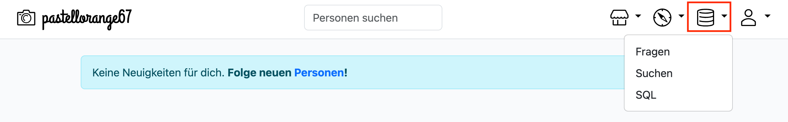
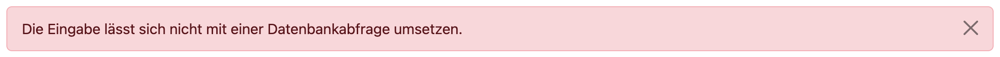
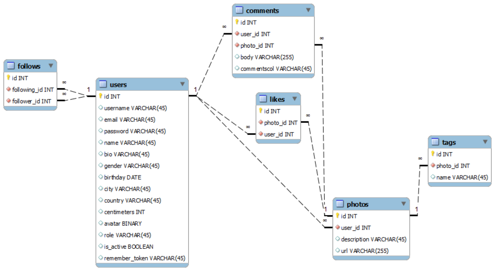
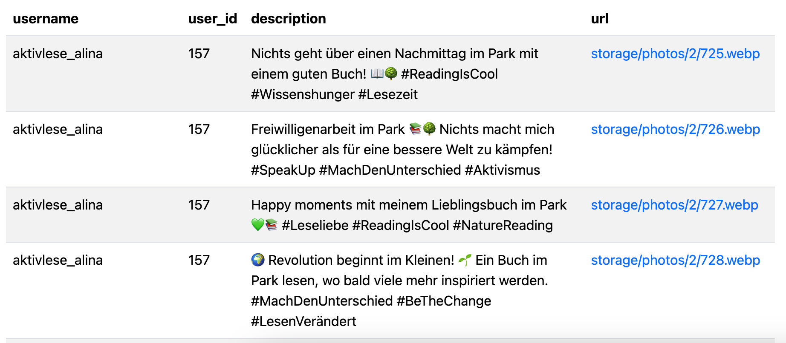

AB 7
Wenn du dich bei deinem InstaHub einloggst, hast du drei Möglichkeiten, um deine Datenbank zu untersuchen: 
-
Du kannst reines SQL schreiben.
-
Du schreibst die Frage, und die KI erstellt die entsprechende SQL-Abfrage.
-
Du arbeitest mit der GUI (Graphical User Interface), in der du Tabellen und Spalten auswählst sowie Filter anwendest.
Abfragen mit KI
Um die folgenden Aufgaben zu lösen, kannst du entweder reines SQL schreiben oder die Aufgaben mithilfe von KI lösen. Versuche es zuerst selbst.
Es kann vorkommen, dass du eine Fehlermeldung erhältst: 
Überprüfe noch einmal, was du geschrieben hast, oder formuliere deine Frage präziser.
Es ist immer gut, einen Überblick darüber zu haben, in welcher Tabelle und unter welcher Spalte du die richtigen Datenwerte findest.
Aufgabe 0
Bevor du deine Datenbank untersuchst, finde heraus, welche Tabellen überhaupt abgefragt werden können. Notiere sie.
Aufgabe 1
Gib die Wohnorte aller Mitglieder aus.
Aufgabe 2
Ordne die Mitglieder nach deren Größe. Das größte Mitglied soll die Liste anführen.
Aufgabe 3
Zeige wie groß das kleinste Mitglied ist.
Aufgabe 4
Zeige an wann sich zuletzt ein Mitglied registriert hat.
Aufgabe 5
Gib die Anzahl der Mitglieder pro Stadt aus.
Erkläre zudem die Bedeutung von NULL-Werten in diesem Kontext und wie sie sich auf die Abfrage auswirken können.
Aufgabe 6
Von welchen Mitgliedern beginnt der Vorname mit einem B?
Aufgabe 7
Finde alle Berliner die Marc heißen.
Aufgabe 8
Sortiere alle Männer nach ihrer Körpergröße, welche mindestens 16 Jahre alt sind.
Aufgabe 9
Erna sucht eine Bekannte aus Berlin. Ihr Vorname war entweder Bea oder Naomi.
Aufgabe 10
Wähle alle Felix aus, die nicht aus Berlin kommen.
Prompt Erstellen
Bei den folgenden Aufgaben ist die SQL-Abfrage bereits gegeben.
Deine Aufgabe ist es, eine passende natürliche Sprachbeschreibung (Prompt) zu formulieren, die eine KI in eine solche SQL-Abfrage umwandeln könnte.
Denke daran: Je präziser dein Prompt, desto genauer wird die SQL-Abfrage sein.
Aufgabe 11
SELECT username
FROM users
LIMIT 25
Aufgabe 12
SELECT MAX(centimeters)
AS "Maximale Körpergröße:"
FROM users
Aufgabe 13
SELECT COUNT(*)
AS "Registrierte Mitglieder"
FROM users
Aufgabe 14
SELECT username
FROM users
WHERE username LIKE "ameli%"
Aufgabe 15
SELECT username, city
FROM users
WHERE city = "Berlin" AND name LIKE "Fabian%"
Aufgabe 16
SELECT username, name
FROM users
WHERE city = "Berlin" AND (gender = "male" OR gender = "female")
Abfragen mit mehreren Tabellen
Bisher wissen wir, wie man Abfragen erstellt, die sich auf genau eine Tabelle beziehen. Manchmal reicht das aber nicht, weil die benötigten Daten auf mehrere Tabellen verteilt sind.
In dieser Abbildung ist ein Teil der InstaHub-Datenbank als Entity-Relationship-Modell (ERM) visualisiert: 
Jede Tabelle enthält außerdem noch die Attribute created_at und updated_at.
Beispiel
Erstelle eine Liste der Fotos aller Benutzer. Diese Liste soll so aussehen:

Dabei solltest du beachten, dass der username aus der Tabelle users stammt, während sich alle anderen Attribute in der Tabelle photos befinden. Die Daten stammen also aus zwei Tabellen.
Lösung
SELECT username, user_id, description, url
FROM users, photos
WHERE users.id = photos.user_id;
Die id aus der users-Tabelle muss mit der user_id aus der photos-Tabelle übereinstimmen:

Die obige Abfrage könnte man so übersetzen:
- Zeig mir ein paar Spalten aus den beiden Tabellen users und photos an.
- Achte dabei auf folgendes: Wenn du mir einen Benutzer zeigst, dann
will ich auch nur die Bilder von genau diesem Benutzer sehen – Dieiddes Benutzers muss also mit deruser_idübereinstimmen, die beim Bild gespeichert ist!
Für die folgenden Aufgaben müssen alle Abfragen ohne die explizite Verwendung der JOIN-Anweisung formuliert werden. Außerdem darfst du keine Unterabfragen (SELECT innerhalb eines WHERE) verwenden.
Die Instahub-KI ist für solche Aufgaben nicht wirklich hilfreich, da sie die Antworten standardmäßig mit JOIN erstellt.
Aufgabe 17
Erstelle eine Abfrage, mit der für jeden Benutzer angezeigt wird, welche Kommentare dieser Benutzer bereits geschrieben hat.
Aufgabe 18
Welche Kommentare hat die Benutzerin aktivlese_alina bisher verfasst?
Das Abfrageergebnis soll diese Attribute enthalten:
usernameuser_idbody
Aufgabe 19
Wie viele Kommentare hat die Benutzerin aktivlese_alina bisher geschrieben?
Wichtig: Da die id in beiden Tabellen vorkommt, musst du konkret angeben, aus welcher Tabelle sie stammt.
Nicht: SELECT id
Sondern: SELECT users.id
Aufgabe 20
Lass dir für jeden Benutzer anzeigen, wie viele Bilder dieser Benutzer hochgeladen hat.
Aufgabe 21
Wie oft hat der Benutzer aktivlese_alina ein Foto „geliked“? Das Ergebnis soll so aussehen.
Aufgabe 22
Ermittle, welche Fotos am beliebtesten sind.
Erstelle hierzu eine Abfrage, die für jedes Foto anzeigt, wie viele Likes es hat (id, Anzahl_Likes, description).
Sortiere das Ergebnis nach der Anzahl der Likes in absteigender Reihenfolge.
Aufgabe 23
Wie viele Follower hat die Benutzerin aktivlese_alina?
Hinweis:
In der Tabelle follows stehen zwei IDs:
follower_id: Die ID des Benutzers, der folgt.following_id: Die ID des Benutzers, dem gefolgt wird.
Aufgabe 24
Für jeden Benutzer soll angezeigt werden, wie viele Follower dieser hat.
Ergebnis-Attribute:
usernameAnzahl_Follower
Aufgabe 25
Wie in Aufgabe 24 sollst du für jeden Benutzer die Anzahl der Follower ermitteln.
Zeige aber nur Benutzer an, die mindestens 10 Follower haben.
Aufgabe 26
Suche nach Fotos, in deren Beschreibung die Worte Strand und Sonne vorkommen.
Erstelle eine Abfrage mit diesen Attributen:
usernameiddescription